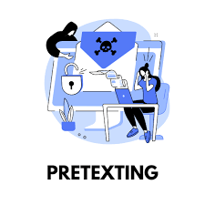

Amenazas personales
Aquellas acciones que pueden afectar a la integridad física o psíquica de una persona
PHISHING
¿ Qué es ?
La palabra phishing quiere decir suplantación de identidad. Es una técnica de
ingeniería social que usan los ciberdelincuentes para obtener información
confidencial de los usuarios de forma fraudulenta y así apropiarse de la identidad de
esas personas.
¿ Cómo se detectan ?
● Archivos adjuntos o vínculos
● Errores ortográficos
● Gramática deficiente
● Gráficos con aspecto poco profesional
● Urgencia innecesaria por verificar su dirección de correo electrónico u otro
tipo de información personal de inmediato
Consejos para evitar ser víctima
● No abras correos que no has solicitado o proceden de usuarios
desconocidos. Elimínalos y bloquea al remitente.
● No contestes en ningún caso a estos correos, ni envíes información personal
como contraseñas, datos personales y bancarios.
● Mantén actualizados todos tus dispositivos y programas.
● Verifica quién te envía un mensaje antes de proporcionar cualquier
información confidencial, aunque el mensaje aparentemente proceda de un
usuario conocido.
● No pulses en enlaces facilitados en correos electrónicos sin antes verificar a
qué sitio web te redirigen.
DEEPFAKE
¿ Qué es ?
Un deepfake es un video, una imagen o un audio generado que imita la apariencia y
el sonido de una persona. También llamados «medios sintéticos», son tan
convincentes a la hora de imitar lo real que pueden engañar tanto a las personas
como a los algoritmos.
¿ Cómo se detectan ?
● Piel demasiado lisa o demasiado arrugada;
● Sombras apagadas alrededor de los ojos
● Errores de deslumbramiento en las gafas
● Vello facial de aspecto poco realista
● Lunares faciales poco realistas
● Demasiado o muy poco parpadeo
Consejos para evitar ser víctima
● Protege tu huella digital
● Usa contraseñas seguras
● Usa doble autentificación, como un escaneo facial, un código enviado a tu
móvil o Utiliza contraseñas largas, fuertes y únicas
● Comparte con cuidado tu información personal
● Denuncia los contenidos deepfake.
PRETEXTING

¿ Qué es ?
Es una técnica básica que consiste en crear un escenario o una historia ficticia para
tratar que la víctima comparta información que en circunstancias normales no
revelaría.
¿ Cómo se detectan ?
● Solicitudes inusuales de información que no coinciden con los procedimientos
normales.
● Verificar la identidad de la persona a través de canales oficiales antes de
compartir información.
● Preguntar detalles que un impostor no debería conocer si fuera legítima
Consejos para evitar ser víctima
● Verificar la identidad de la persona o entidad que solicita información sensible
mediante llamadas directas o verificaciones internas.
● No proporcionar información confidencial sin verificar la autenticidad de la
solicitud.
● Establecer políticas estrictas sobre quién puede acceder a datos sensibles.
SEXTORSIÓN
¿ Qué es ?
Chantaje donde un atacante amenaza con divulgar contenido sexual explícito de la
víctima a menos que cumpla con sus demandas.
Se trata de una forma de chantaje en la que el atacante amenaza a la víctima con
distribuir supuesto contenido comprometido (imágenes o vídeos con connotación
sexual) a todos sus contactos.
Frecuentemente, el chantaje se realiza con la intención de dominar la voluntad de la
víctima, dañarla, humillarla o acosarla. En otros casos, pretenden obtener beneficios
económicos.
¿ Cómo se detectan ?
● Amenazas recibidas por correo o redes sociales exigiendo dinero a cambio
de no publicar contenido íntimo.
● Solicitudes urgentes o mensajes alarmistas.
● Revisar si las cuentas en redes sociales son sospechosas o recientemente
creadas.
Consejos para evitar ser víctima
● No compartir imágenes o videos íntimos en línea, incluso con personas de
confianza.
● Utilizar autenticación de dos factores en cuentas de redes sociales y correos
electrónicos.
● Evitar grabar contenido explícito que pueda caer en manos equivocadas.
● Reportar inmediatamente cualquier intento de sextorsión a las autoridades y
a las plataformas en cuestión.